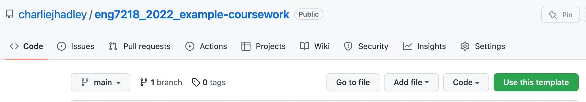

As detailed in the assessment information document, you will be answering Part A and B in an MS Word document and Part C in an RMarkdown document.
To ensure that you understand the correct format for the assessment you may use this GitHub repository as a template by clicking the green “Use this template” button.
